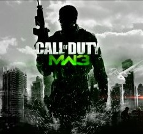
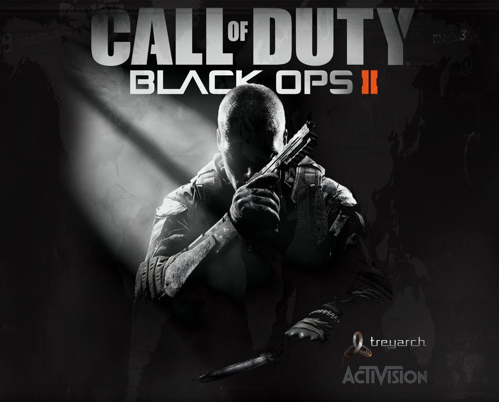
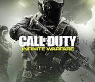
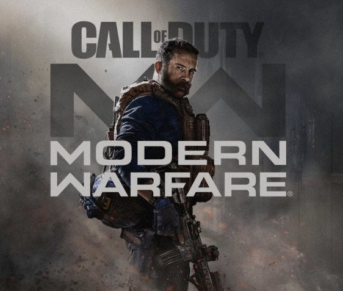

CALL OF DUTY 4: MODERN WARFARE

Call Of Duty 4: Modern Warfare
Call of Duty 4: Modern Warfare je střílečka z roku 2007 vytvořená společností Infinity Ward a vydaná společností Activision. Je to čtvrtý hlavní díl ze série Call of Duty. Hra se odděluje od prostředí druhé světové války předchozích položek a místo toho se odehrává v moderní době. Modern Warfare, vyvíjený více než dva roky, byl vydán v listopadu 2007 pro PlayStation 3, Xbox 360 a Microsoft Windows a v roce 2009 byl portován na Wii jako Call of Duty: Modern Warfare – Reflex Edition.
Příběh se odehrává v roce 2011, kdy radikální vůdce popravil prezidenta nejmenované země na Blízkém východě a ultranacionalistické hnutí rozpoutalo občanskou válku v Rusku. Konflikty jsou viděny z pohledu seržanta průzkumu námořní pěchoty USA a britského komanda SAS a odehrávají se na různých místech, jako je Spojené království, Střední východ, Ázerbájdžán, Rusko a Ukrajina. Část hry pro více hráčů obsahuje různé herní režimy a obsahuje systém vyrovnávání, který umožňuje hráči odemykat další zbraně, příslušenství ke zbraním a kamuflážní schémata, jak postupují.
Hra získala univerzální uznání od kritiků, s chválou na hratelnost a příběh, ale kritiku za nedostatek inovací. Hra získala řadu ocenění od herních webů, včetně „Nejlepší hry pro Xbox 360“ od IGN. Hra je považována za jednu z největších videoher všech dob. V roce 2007 to byla celosvětově nejprodávanější hra, do ledna 2008 se prodalo kolem sedmi milionů kopií a do listopadu 2013 téměř šestnáct milionů. Po ní následovala dvě pokračování, která pokračují v příběhu: Call of Duty: Modern Warfare 2 (2009) a Call of Duty: Modern Warfare 3 (2011).
Remasterovaná verze hry, Call of Duty: Modern Warfare Remastered, byla vydána jako součást speciální edice balíčků Call of Duty: Infinite Warfare v listopadu 2016 a jako samostatná hra v červnu 2017. Reboot her Modern Warfare , Call of Duty: Modern Warfare, byl vydán v říjnu 2019.
CALL OF DUTY: MODERN WARFARE 3
Call Of Duty: Modern Warfare 3
Call of Duty: Modern Warfare 3 je střílečka z roku 2011 z pohledu první osoby, kterou společně vyvinuly Infinity Ward a Sledgehammer Games a vydala Activision. Hra byla celosvětově vydána v listopadu 2011 pro Microsoft Windows, Xbox 360, PlayStation 3 a Wii. Je to třetí a poslední díl původní ságy Modern Warfare, přímé pokračování Call of Duty: Modern Warfare 2 z roku 2009 a celkově osmý díl Call of Duty. Samostatnou verzi pro Nintendo DS vyvinula společnost n-Space, zatímco Treyarch vyvinul herní port pro Wii. V Japonsku vydal Square Enix hru se samostatnou titulkovanou a dabovanou verzí.
Kampaň hry navazuje na Modern Warfare 2 a začíná hned po událostech její poslední mise. Podobně jako v Modern Warfare 2 se soustředí kolem Task Force 141, která obsahuje kapitána Price, Soap MacTavish a Yuriho, jednu z hratelných postav. Po boku Delta Force a Special Air Service loví Vladimira Makarova (hlavního protivníka trilogie), ruského teroristu, který vede ruskou ultranacionalistickou stranu. Vede několik teroristických útoků po celé Evropě, což vyvolalo rozsáhlou válku mezi ultranacionalisty a spřátelenými silami. Pro režim hry pro více hráčů byly přidány nové typy režimů a možnosti killstreak. Vylepšení se dočkal i režim, který řešil problémy, které se objevily v Modern Warfare 2.
Pomocí vylepšené verze IW enginu Modern Warfare 2 začal vývoj hry v roce 2010 s více než jedním vývojářem. Před vývojem opustili společnost spoluzakladatelé Infinity Ward Jason West a Vince Zampella a založili Respawn Entertainment. Ostatní členové byli propuštěni nebo opustili společnost po odchodu dua. Sledgehammer Games se připojily k vývojové síle Modern Warfare 3, přičemž Raven Software také vyvinul herní režim pro více hráčů. Po velkém úniku informací obsahujících podrobné informace o hře bylo vydáno několik upoutávek s upoutávkami, z nichž každý představuje umístění uvedené v kampani hry, což vedlo k úplnému odhalení.
Modern Warfare 3 obdržela pozitivní recenze od kritiků, s chválou za jeho hratelnost, kampaň a multiplayer, ačkoli tam byla určitá kritika za jeho příběh a nedostatek inovací. To vyhrálo cenu za nejlepšího střelce na Spike Video Game Awards 2011. Byl to obrovský komerční úspěch. Během 24 hodin od zahájení prodeje se hry ve Spojených státech a Spojeném království prodalo 6,5 milionu kopií a vydělala 400 milionů dolarů, což z ní v té době činilo největší zábavní trh vůbec.
CALL OF DUTY: BLACK OPS II
Call Of Duty: Black Ops II
Call of Duty je střílečka z roku 2003 vyvinutá společností Infinity Ward a publikovaná společností Activision. Je to první díl franšízy Call of Duty, vydaný 29. října 2003 pro Microsoft Windows. Hra simuluje pěchotu a válku kombinovaných zbraní z druhé světové války pomocí upravené verze enginu id Tech 3. Hodně z jeho tématu a gameplay je podobný Medal of Honor série; Call of Duty však představuje několik úhlů pohledu inscenovaných v amerických, britských a sovětských divadlech druhé světové války.
Hra představila nový pohled na spojence řízené umělou inteligencí, kteří podporují hráče během misí a reagují na situační změny během hraní. To vedlo k většímu důrazu na týmovou hru oproti přístupu „osamělého vlka“, který se často zobrazoval v dřívějších střílečkách z pohledu první osoby. Velká část vývojového týmu Infinity Ward se skládala z členů, kteří pomohli vyvinout Medal of Honor: Allied Assault. Hra získala uznání kritiků a získala několik ocenění Hra roku od recenzentů.
V září 2004 byl vydán rozšiřující balíček s názvem Call of Duty: United Offensive, který byl produkován Activision a vyvinutý Gray Matter Interactive a Pi Studios. Verze N-Gage zároveň dostala Arena Pack se 3 novými úrovněmi. Vylepšený port Call of Duty pro PlayStation 3 a Xbox 360 s názvem Call of Duty Classic byl celosvětově vydán v listopadu 2009 s vydáním Call of Duty: Modern Warfare 2, které je dostupné prostřednictvím kódů pro uplatnění, které jsou součástí balíčku „Hardened“. a "Prestige" edice hry.
CALL OF DUTY: GHOST

Call Of Duty: Ghost
Call of Duty: Ghosts je střílečka z roku 2013 vyvinutá společností Infinity Ward a vydaná společností Activision, je to desátý hlavní díl v sérii Call of Duty a šestý vyvinutý společností Infinity Ward. Byla vydána pro Microsoft Windows, PlayStation 3, Xbox 360 a Wii U 5. listopadu 2013. Hra byla vydána s uvedením PlayStation 4 a Xbox One.
Ghosts obdrželi obecně smíšené recenze od kritiků, přičemž většina chválila jeho hru pro více hráčů a představení nového herního režimu Extinction, ale kritizovala jej za kampaň pro jednoho hráče, přehánění známých konceptů a obecný nedostatek inovací.
Kampaň
V Call of Duty: Ghosts je příběh většinou vyprávěn očima jediné postavy, Logana Walkera. Hráči převezmou roli Logana po většinu hry, s několika dalšími hratelnými postavami, včetně specialisty na astronauty jménem Baker, seržanta Thompsona, člena Ikara a Loganova otce, Eliase Walkera, se zcela novou možností hrát jako Riley, první. nelidská hratelná postava ve franšíze.
Multiplayer
Režim pro více hráčů v Call of Duty: Ghosts obsahuje změny oproti předchozím hrám Call of Duty, protože do něj byly přidány některé nové mechaniky. Mapy nyní obsahují oblasti, které lze změnit nebo zničit. Existuje odměna za zabití podobnou atomovce, KEM Strike. Hráč může získat sérii zabití ODIN buď získáním určitého počtu zabití, nebo zabitím nejlepšího hráče z druhého týmu a poté dokončením různých výzev poté, co zvedne modrý kufřík, který upadne. Dalekohledy odstřelovací pušky mají také novou „technologii duálního vykreslování“, která umožňuje hráči při přiblížení vidět kolem vnějšku dalekohledu (i když rozmazaně). 3. října byl odhalen nový typ hry pro více hráčů, nazvaný Squads. To představuje tým, který si hráč může postavit a hráč může čelit dalším týmům po celém světě. Hráčský tým lze vylepšit a bude se chovat jako skutečný jedinec. "Octane", "Prison Break", "Tremor", "Náklad", "Stormfront", "Siege", "Warhawk", "Sovereign", "Overlord", "Flooded", "Strikezone", "Whiteout", " Stonehaven“ a „Chasm“ jsou mapy, které jsou zatím v Call of Duty: Ghosts. Dynamická mapa „Free Fall“ byla bonusem k předobjednávkám. Hra nyní obsahuje hratelné vojačky.
CALL OF DUTY: INFINITE WARFARE
Call Of Duty: Infinite Warfare
Call of Duty: Infinite Warfare je střílečka z pohledu první osoby z roku 2016 vyvinutá společností Infinity Ward a vydaná společností Activision. Je to třináctý díl ze série Call of Duty a celosvětově vyšel pro Microsoft Windows, PlayStation 4 a Xbox One 4. listopadu 2016.
Vývoj Infinite Warfare začal během roku 2014. Jde o první titul od Infinity Ward v rámci nového tříletého vývojového cyklu pro sérii Call of Duty. Kampaň hry se soustředí na bitvu o Sluneční soustavu, kterou se snaží převzít Obranná fronta osad (SDF), nepřátelská síla, která je hlavními protivníky. Hráč převezme kontrolu nad poručíkem Nickem Reyesem ze Special Combat Air Recon (SCAR). Mají svou vlastní transformující se stíhačku nazvanou „Šakal“, kterou si mohou upravit, stejně jako centrální centrální loď s názvem Retribution.
Upoutávka na oznámení Infinite Warfare byla známá svou silnou negativní reakcí; v té době to bylo druhé nejvíce oblíbené video na YouTube. Komentátoři to připisovali fanouškům Call of Duty, kteří vyjadřovali frustraci ze směru, kterým se série vydala, konkrétně z toho, že hra a její předchůdci měli futuristické prostředí. Nicméně, hra přijala obecně pozitivní recenze na vydání; získalo chválu za svou hratelnost, postavy a režim zombie, ale kritiku za režim pro více hráčů, zatímco kampaň pro jednoho hráče získala smíšené názory. Game Informer jej označil za nejlepšího střelce na E3 a byl nominován na několik cen, přičemž jednu z nich vyhrál. Infinite Warfare nedosáhla v prodejích ve srovnání s předchozími tituly Call of Duty, ačkoli to byla v listopadu 2016 nejprodávanější hra v USA.
Speciální edice Infinite Warfare byly vydány s remasterovanou verzí Call of Duty 4: Modern Warfare s názvem Call of Duty: Modern Warfare Remastered.
CALL OF DUTY: WARZONE
Call Of Duty: Warzone
Call of Duty: Warzone je free-to-play battle royale videohra vydaná 10. března 2020 pro PlayStation 4, Xbox One a Microsoft Windows. Bylo oznámeno, že verze pro PlayStation 5 a Xbox Series X/S bude vydána někdy v budoucnu. Hra je součástí Call of Duty: Modern Warfare z roku 2019 a je propojena s Call of Duty: Black Ops: Cold War z roku 2020 a Call of Duty: Vanguard z roku 2021 (ale nevyžaduje nákup žádného z titulů) a byla představena během sezóny 2. obsahu Modern Warfare. Warzone je vyvinut Infinity Ward a Raven Software (poslední jmenovaný byl později připsán jako jediný vývojář po integraci obsahu Cold War) a publikován společností Activision. Warzone umožňuje online boj pro více hráčů mezi 150 hráči, ačkoli některé herní režimy s omezeným časem podporují 200 hráčů. Mezi další režimy patří Plunder, Rebirth: Resurgence, Buy Back, Payload a Clash. Hra nabízí jak multiplatformní hraní, tak multiplatformní postup mezi třemi hrami.
Hra obsahuje dva hlavní režimy: Battle Royale a Plunder. Warzone představuje nový herní měnový systém, který lze použít na "Buy Stations" na mapě a kolem ní. Poklesy "Loadout" jsou příkladem, kde lze vyměnit hotovost za omezený přístup k uživatelským třídám hráčů (které byly sdíleny se standardními režimy Modern Warfare před sezónou 6, v1.29, ale nyní jsou jedinečné pro Warzone). Hráči mohou také použít hotovost k nákupu předmětů, jako jsou „killstreaks“ a plynové masky. Hotovost lze najít pleněním budov a zabíjením hráčů, kteří mají hotovost. Při uvedení na trh Warzone nabízel pouze Trios, kapacitu týmu tří hráčů. Nicméně, v bezplatných aktualizacích obsahu po spuštění byly do hry přidány Solos, Duo a Quads.
Hra získala obecně pozitivní recenze od kritiků, přičemž mapy obdržely konkrétní chválu. V dubnu 2021 Activision oznámil, že Warzone překonal 100 milionů aktivních hráčů